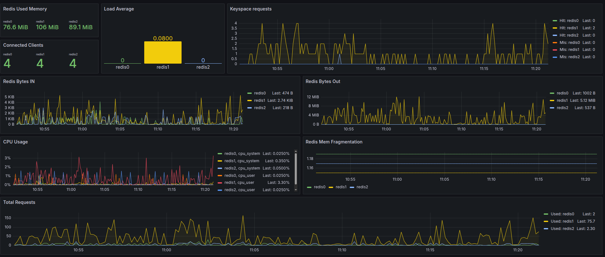

Redis
Install
cd ${PUYPUY_HOME}/checks_enabled
ln -s ../checks_available/check_redis.py ./
Configure
check_redis module have pre configured defaults, that should work for most of stups, but if you need, you can edit conf/sql_cache.ini and make changes in section Redis
[Redis]
host: 127.0.0.1
port: 6379
Restart
${PUYPUY_HOME}/puypuy.sh restart
Provides
| Name | Description | Type | Unit |
|---|---|---|---|
| redis_connected_clients | Amount of connected clients | counter | None |
| redis_evicted_keys | Amount of evicted keys per second | rate | OPS |
| redis_expired_keys | Amount of evicted keys per second | rate | OPS |
| redis_keyspace_hits | Amount of keyspace hits per second | rate | OPS |
| redis_keyspace_misses | Amount of keyspace misses per second | rate | OPS |
| redis_mem_fragmentation_ratio | Memory fragmentation ratio | gauge | None |
| redis_rdb_bgsave_in_progress | In progress of RDB background save processes | counter | None |
| redis_rdb_changes_since_last_save | Changes made in RDB since last save | counter | None |
| redis_rdb_current_bgsave_time_sec | Amount of seconds spend for current background save | counter | Seconds |
| redis_rdb_last_bgsave_time_sec | Amount of seconds spend for last background save | counter | Seconds |
| redis_total_commands_processed | Amount of commands executed on Redi per second | rate | OPS |
| redis_total_net_input_bytes | Input bytes per second | rate | Bytes |
| redis_total_net_output_bytes | Output bytes per second | rate | Bytes |
| redis_uptime_in_seconds | Redis uptime in seconds | gauge | Seconds |
| redis_used_memory | Redis used memory | gauge | Bytes |
| redis_used_memory_peak | Redis Memory peak usage | gauge | Bytes |
| redis_used_memory_rss | Redis RSS used memory | gauge | Bytes |
📈 Example Grafana Dashboard

Memcached
Install
cd ${PUYPUY_HOME}/checks_enabled
ln -s ../checks_available/check_memcached.py ./
Configure
check_memcached module have pre configured defaults, that should work for most of stups, but if you need, you can edit conf/sql_cache.ini and make changes in section Memcached
[Memcached]
host: 127.0.0.1
port: 11211
Restart
${PUYPUY_HOME}/puypuy.sh restart
Provides
| Name | Description | Type | Unit |
|---|---|---|---|
| memcached_bytes | Memcached memory usage in bytes | gauge | Bytes |
| memcached_bytes_read | Read bytes per second | rate | Bytes |
| memcached_bytes_written | Write bytes per second | rate | Bytes |
| memcached_cmd_get | GET command per second | rate | OPS |
| memcached_cmd_set | SET commands per second | rate | OPS |
| memcached_curr_connections | Amount of currently active connections | gauge | None |
| memcached_curr_items | Amount of current items | counter | None |
| memcached_delete_hits | DELETE hits per second | rate | OPS |
| memcached_delete_misses | DELETE misses per second | rate | OPS |
| memcached_evictions | Evictions per second | rate | OPS |
| memcached_get_hits | GET hits per second | rate | OPS |
| memcached_get_misses | GET misses per second | rate | OPS |
| memcached_incr_misses | INCR misses per second | rate | OPS |
| memcached_limit_maxbytes | Memcached maximum bytes limit | gauge | Bytes |
| memcached_rusage_system | System memory usage | gauge | Bytes |
| memcached_rusage_user | User Memory usage | gauge | Bytes |